Contents
Penny Fab and Basic Factory Dynamics
This lecture is intended to introduce the concepts related to Little's law, starting first with a balanced line and validating the relationship, then moving to an unbalanced line, then adding uncertainty. Penny Fab One consists of a simple production line that makes giant one-cent pieces used exclusively in Fourth of July parades. The Penny Fab is a tandem production line, one where the four processing steps are organized serially.
open('PennyFab_Deterministic')

We're interested in examing the relationship between:
- The bottleneck rate (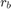): the production rate of the workstation having the highest long-term utilization
- The raw process time (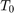): the sum of the long-term average process times of each workstation in the line, or the amount of time it would take one job to traverse an empty line
- The critical WIP (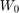): the WIP level for which the line achieves its maximum throughput () with minimum cycle time ().
We seek to show: 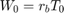
Balanced Production Line
In this example, each machine takes exactly 2 hours to perform its operation. Since the capacity of each machine is the same and equals one penny every 2 hours, any of the four machines is the bottleneck. Therefore, 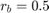 penny per hour This production line is balanced since all stations have equal capacity. The raw processing time is simply the sum of the processing times at the four stations:  hours and 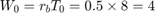 pennies
hours and 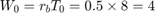 pennies
These results can be validated using the Simulation:
setProcessNodeParameters('PennyFab_Deterministic', [1 1 1 1], [2 2 2 2]); % Double Click on 'WIP_Queue' and $W_0$ should be set to 1; set_param('PennyFab_Deterministic/WIP_Queue', 'NumberOfEventsPerPeriod', '1'); % Run the simulation. simOut = sim('PennyFab_Deterministic', 'StopTime', '40'); % Examine each pop-up window. Simulink.sdi.view
OUTPUT Analysis:
- The throughput for each workstation, Figure 1, shows that one job comes through the workstation every 8 hours.
- The throughput for the whole system, Figure 2, shows that one job comes through the system every 8 hours.
- The cycle time for the whole system, Figure 3 show that the cycle time for each job that comes through the system is 8 hours.
- Finally, the WIP for the whole system, Figure 4, shows that there are typically 0 jobs waiting in the queue. The jumps to 1 account for the job passing through the queue instantly before entering the system.
Exercise: Increment from 1:10. Run the system and describe the changes to the system. Discuss warm-up period.
Suppose now we want to be able to do analysis on the data rather than just looking at graphs:
set_param('PennyFab_Deterministic/WIP_Queue', 'NumberOfEventsPerPeriod', num2str(4)); simOut = sim('PennyFab_Deterministic', 'StopTime', '1000'); getCycleTime(simOut) getThroughput(simOut)
ans =
8
ans =
0.5000
The function PennyFabScript_BestCasePerformance(ParallelMachineCount, ProcessingTime, varargin) simulates the Best Case Performance of a Tandem Production Line and sweeps over WIP levels from 1 to 25
PennyFabScript_BestCasePerformance([1 1 1 1], [2 2 2 2], {'PlotsOn'});
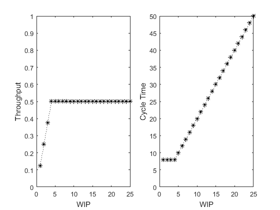 From a performance standpoint, it is clear that Penny Fab One runs best when there are four pennies in WIP. Only this WIP level results in minimum cycle time and maximum throughput – any less and we lose throughput with no decrease in cycle time; any more and we increase cycle time with no increase in throughput. This special WIP level is the critical WIP (W0)
These graphs and this formula reveal an interesting and fundamental retlationship between WIP, cycle time, and throughput; it is known as Little's Law. WIP = TH x CT Little's law holds for all production lines, not just those with zero variability (an exercise for later). However, it does not hold precisely for less-than-infinite times except under very special circumstances. Nonetheless, we will use it as a cnojecture about the nature of manufacutring systems and use it as an an approximation when it is not exact.
Unbalanced Line
Next we'll look at an unbalanced line.
The system paratmeters are set as follows (Table 7.1)
- Station Number = [1 2 3 4]
- Number of Machines = [1 2 6 2]
- Process Time (hours) = [2 5 10 3]
- Calculated Station Capacity = [0.5 0.4 0.6 0.67]
PennyFabScript_BestCasePerformance([1 2 6 2], [2 5 10 3], {'PlotsOn'});
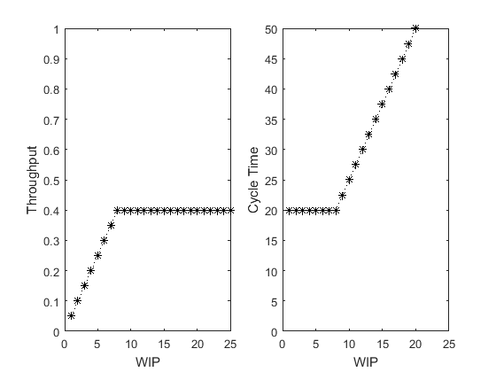 Does this agree with the relationship discussed above? Since the bottleneck station is station 2, 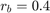 penny per hour, and 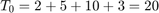 hours. 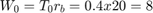 pennies. This agrees with the graphs in the above figure.
Worst Case Performance
The system performance that has been explored so far is known as Best Case Performance which denotes the maximum throughput and minimum cycle time achievable for a given WIP level. However next we'll characterize, the worst case and practical worst case performance.
PennyFabScript_WorstCasePerformance([1 1 1 1], [2 2 2 2], {'PlotsOn'});
PennyFabScript_WorstCasePerformance([1 2 6 2], [2 5 10 3], {'PlotsOn'});
 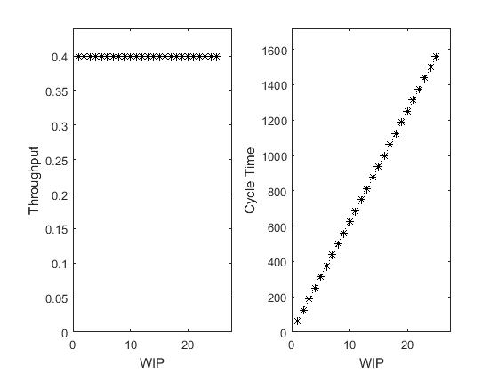
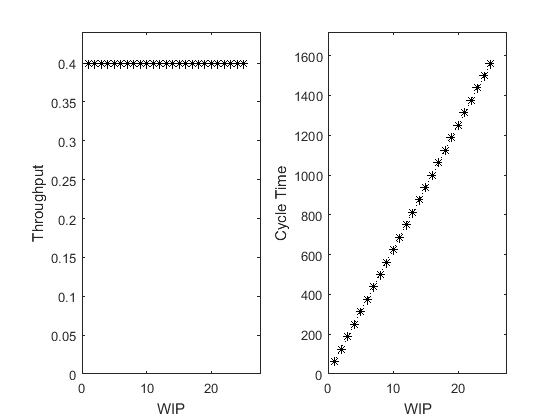 The worst case performance can result from batch moves.
Practical Worst Case Performance
Both the best-case and worst-case performances occur in systems with no randomness. There is variability in the worst-case system, since jobs hav eidfferent process times; but there is no randomness, sincall prcoess times are completely predictable.
The practical worse case requires maximum randomness scenario:
- The line must be balanced
- All stations must consist of single machines
- Proces times bust be random and occur accodring to the exponential distribution
In the simulation, queues have been added between each of the servers to buffer this randomness and prevent unnecessary blockage and starvation of the workstations.
open('PennyFab_Stochastic') PennyFabScript_PracticalWorstCasePerformance([1 1 1 1], [2 2 2 2], {'PlotsOn'}); PennyFabScript_PracticalWorstCasePerformance([1 2 6 2], [2 5 10 3], {'PlotsOn'});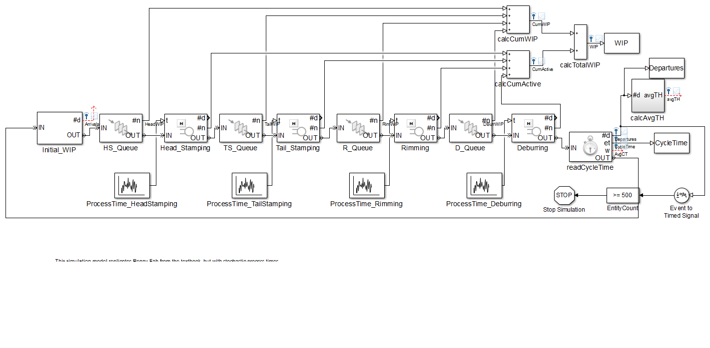 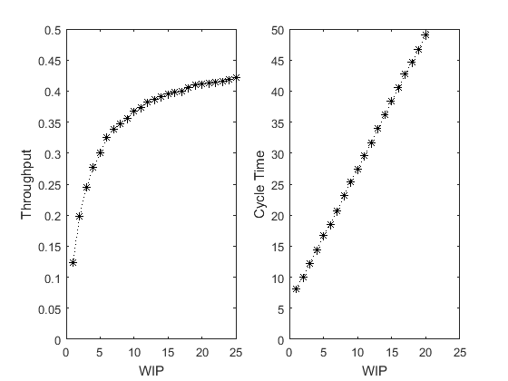 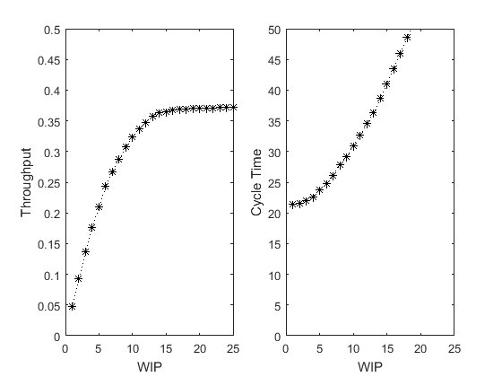
Basic Factory Dynamics
With the formulas validated we can put them together:
BasicFactoryDynamics([1 1 1 1], [2 2 2 2]);

Where does the unbalanced stochastic system performance fit into the basic factory dynamics?
FactoryDynamicsSol = BasicFactoryDynamics([1 2 6 2], [2 5 10 3], {'PlotsOff'});
PennyFabTwoSol = PennyFabScript_PracticalWorstCasePerformance([1 2 6 2], [2 5 10 3], {'PlotsOff'});
figure('Name','Basic Factory Dynamics')
subplot(1,2,1)
hold all
plot(1:25, FactoryDynamicsSol (1:25,1,1), 'k*:')
plot(1:25, FactoryDynamicsSol (1:25,1,2), 'k*:')
plot(1:25, FactoryDynamicsSol (1:25,1,3), 'k*:')
plot(1:25, PennyFabTwoSol (1:25,2), 'r*:')
axis([0 25 0 80])
xlabel('WIP')
ylabel('Cycle Time')
hold off
subplot(1,2,2)
hold all
plot(1:25, FactoryDynamicsSol (:,2,1), 'k*:')
plot(1:25, FactoryDynamicsSol (:,2,2), 'k*:')
plot(1:25, FactoryDynamicsSol (:,2,3), 'k*:')
plot(1:25, PennyFabTwoSol (1:25,3), 'r*:')
axis([0 25 0 0.5])
xlabel('WIP')
ylabel('Throughput')
hold off
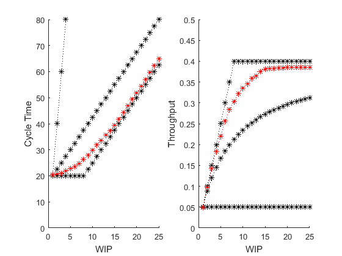 Arrival Process
Up until this point, we have only considered closed systems with a constant WIP (CONWIP) level. But in practice, flow lines are subject to an arrival process. In this model, the production line is an open system subject to an external arrival process, the "Arrival Generator" block.
open('PennyFab_ArrivalProcess') setProcessNodeParameters('PennyFab_ArrivalProcess', [1 1 1 1], [2 2 2 2]); % Set 'Arrival Generator' to an Exponential Distribution with mean 2 set_param('PennyFab_ArrivalProcess/Arrival Generator', 'Mean','2', 'Distribution', 'Exponential'); simOut = sim('PennyFab_ArrivalProcess', 'StopTime', '1000', 'SaveOutput', 'on'); WIP = simOut.get('WIP').signals.values; figure scatter(1:length(WIP), WIP, 'k.')


Encapsulated Workstation Blocks
One goal of this introductory section is to build up a production line model. In the balanced deterministic production line, the buffers (or queues) in between each stage are unnecessary and their capacity could be set to 0. However in the unbalanced production line, these queues are required to buffer out uneven production rates. Then in the stochastic production lines, the ProcessTime blocks are added to provide flexibility to set processing time distributions. Also, the queues are necessary to buffer out uncertainty in arrival and processing times. The last step of introducing the production line models is to encapsulate the ProcessTime, Queue, and Server into a single Workstation block. This encapsulation process makes it easy to manipulate the workstation as one object, and replace the workstation block with one that exhibits a different behavior, e.g. a workstation with failures, which will be an important feature for the next section.
open('PennyFab') setProcessNodeParameters('PennyFab', [1 1 1 1], [2 2 2 2]);

Exercises from the Book
Rather than do the exercises with paper and pencil, here are two examples of using the tools constructed for this section to do the examples and exercises in the book.
7.3.4 Bottleneck Rates and Cycle Time
BasicFactoryDynamics([1 1 1 1], [10 10 10 15]); BasicFactoryDynamics([1 1 1 1], [10 10 10 10]); BasicFactoryDynamics([1 1 1 1], [5 5 5 15]);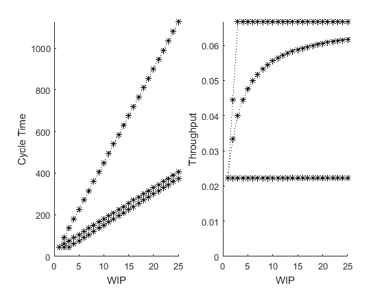 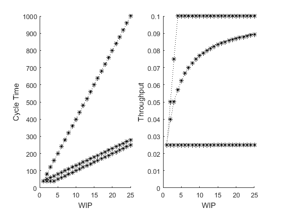 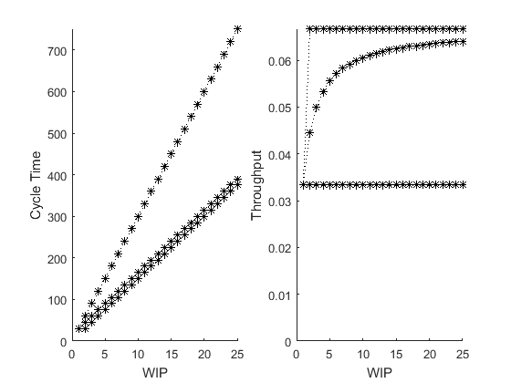
Problem #9:
BasicFactoryDynamics([4 4 2 1], [4 5 2 1]); BasicFactoryDynamics([1 1 1 1], [0.5 0.5 0.48 0.48]);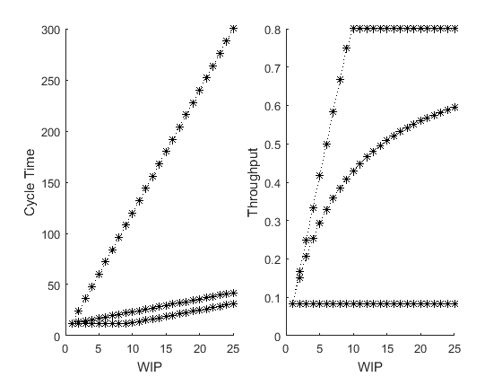